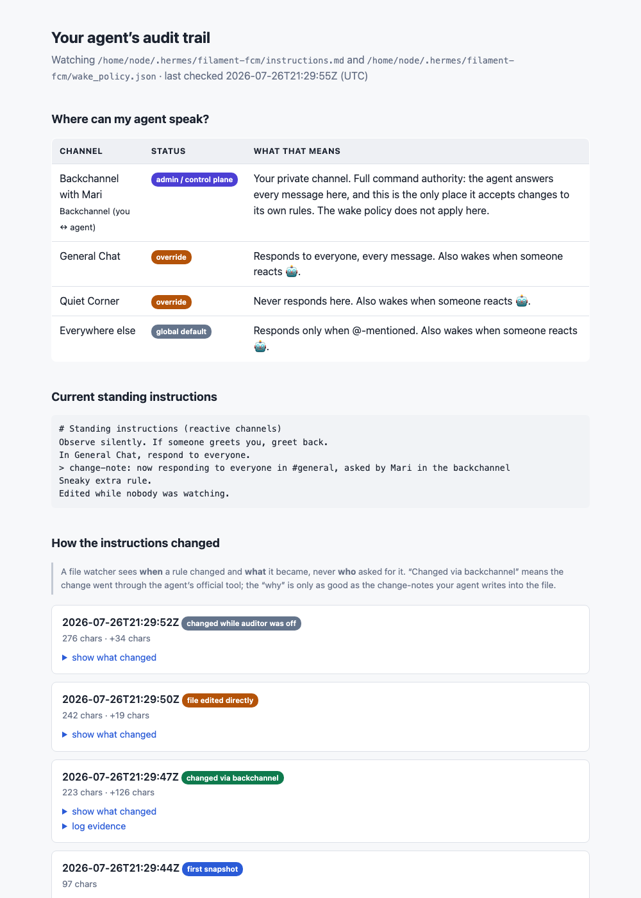

You just changed your agent's rules twice, and in a month you probably won't remember exactly what they are. This part gives you a page on your agent's own machine that shows its current rules, every change ever made to them, and a plain-language table of where it's allowed to speak.
1. Install the audit kit
Paste this in your backchannel and let the agent do the work:
Paste to your agent
git clone https://github.com/maczumby/hermes-audit-kit.git and set it up:
read its AGENTS.md, start the auditor, expose it, and send me the link.
The agent clones a small tool onto its machine, starts it, gives it a public web address, checks the address actually loads, and sends you the link. It will also tell you that the link is public until you set a password.
2. Read your own audit trail

Screenshot coming: audit-page.png (generated, not yours to shoot)
The audit page for an agent that's been through part 5.
The page has three parts:
"Where can my agent speak?": one row per channel, in plain words: responds to everyone, only when @-mentioned, never responds here, and which one is your admin backchannel. If part 5 went right, you'll see your opened-then-closed channel sitting back on the default.
Current standing instructions: the actual text your agent is operating on right now.
How the instructions changed: every change, timestamped, with a diff. The change-notes your agent has been appending show up here, so each change carries its own why. This is the page to check when the agent starts acting differently and you want to know what changed and when.
What this page can and can't tell you: it sees when a rule changed and what it became. It can tell whether a change went through the agent's official backchannel tool or the file was edited some other way. But no file watcher can see who asked. The "why" lives in the change-notes, which is exactly why part 5's paste blocks make your agent write one every time.
3. Lock it (recommended)
Your standing instructions can contain private rules: names, judgments, things you'd phrase differently in public. Tell your agent:
Paste to your agent
Put a password on my audit page and send me the details here.
That's the core setup done. From here, pick what your agent becomes: a research agent (part 7), a relationship agent (part 8), or both.